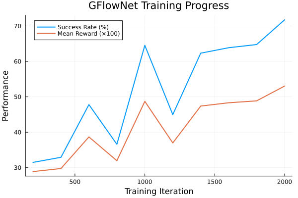
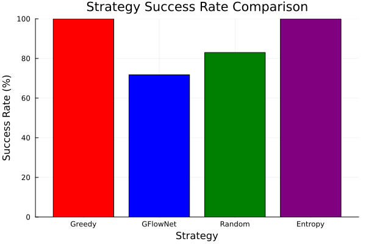
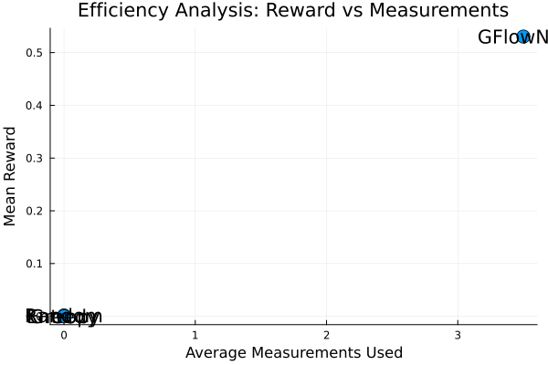
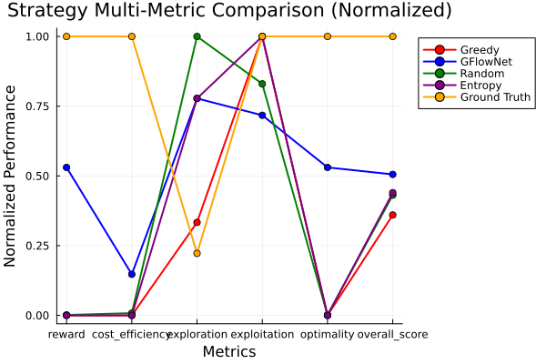
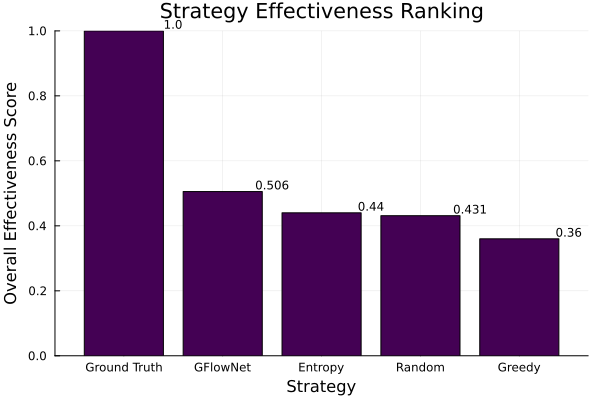
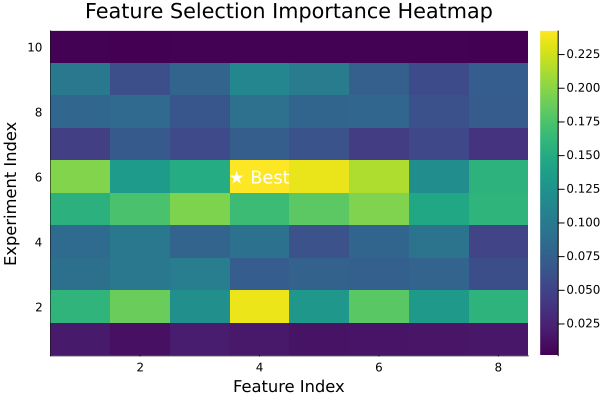
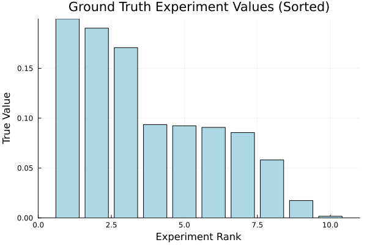
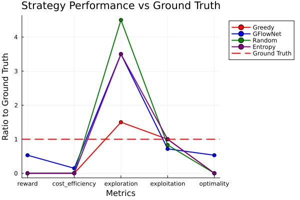

The GFlowNet model was trained to learn optimal feature acquisition strategies across 10 experiments. The training showed clear improvement from 31.5% to 71.7% success rate.

We compared multiple strategies for feature acquisition, each with different approaches to balancing exploration and exploitation:
| Strategy | Success Rate | Mean Reward | Avg Measurements | Efficiency |
|---|---|---|---|---|
| Greedy | 100.0% | 0.0 | 0.0 | N/A |
| GFlowNet | 71.7% | 0.53 | 3.5 | 0.151 |
| Random | 83.0% | 0.002 | 0.0 | N/A |
| Entropy | 100.0% | 0.0 | 0.0 | N/A |


Each strategy was evaluated across multiple dimensions to understand its strengths and weaknesses:


The heatmap below shows which experiment-feature combinations are most valuable. Higher-value experiments (particularly Experiment 6) should receive more attention:


Comparison of all strategies against the theoretical optimal (ground truth) performance:

| Strategy | Reward | Cost Efficiency | Exploration | Exploitation | Optimality | Overall Score |
|---|---|---|---|---|---|---|
| Greedy | 0.0 | 0.0 | 0.3 | 1.0 | 0.0 | 0.36 |
| GFlowNet | 0.53 | 1.473 | 0.7 | 0.717 | 0.53 | 0.506 |
| Random | 0.002 | 0.082 | 0.9 | 0.83 | 0.002 | 0.431 |
| Entropy | 0.0 | 0.0 | 0.7 | 1.0 | 0.0 | 0.44 |
| Ground Truth | 1.0 | 10.0 | 0.2 | 1.0 | 1.0 | 1.0 |
This implementation extends the V3 single-experiment approach to handle multiple experiments simultaneously:
This hybrid implementation combines:
strategy_comparison.png - Basic strategy comparisonefficiency_analysis.png - Reward vs measurement trade-offsgflownet_training.png - Training progressionground_truth_comparison.png - Experiment value distributionstrategy_radar_comparison.png - Multi-metric strategy analysisfeature_selection_heatmap.png - Experiment-feature importancestrategy_effectiveness_ranking.png - Overall strategy rankingground_truth_vs_strategies.png - Performance vs optimalstrategy_metrics.csv - V3-compatible strategy metricsANALYSIS_REPORT.md - Detailed markdown analysisBENCHMARK_SUMMARY.md - Comprehensive summary